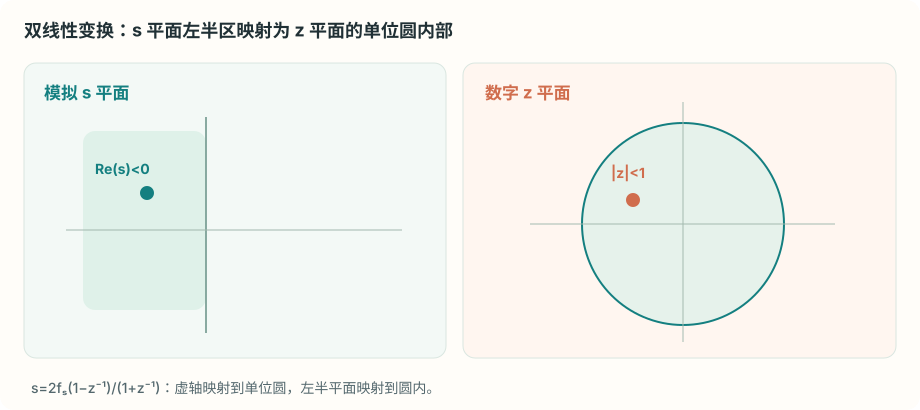
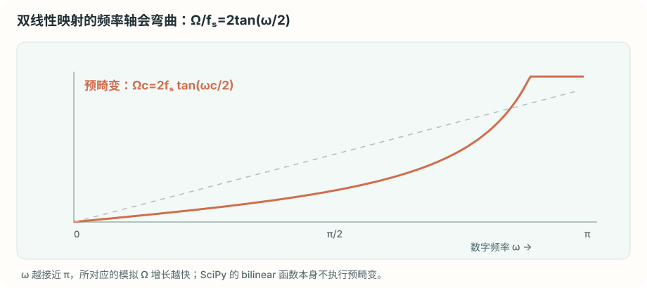
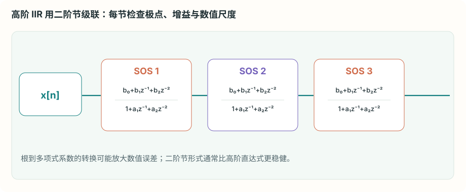

Signal · System · Insight / 10
IIR 设计：反馈、双线性变换与稳定的二阶节
从模拟原型出发推导数字极点、频率预畸变与可执行滤波器，并说明工程数值实现的边界。
反馈为什么可以节省系数，却需要额外的稳定性检查？
当输出依赖过去的输出，一个单位冲激就可能留下永不严格终止的尾部。这个机制使数字 IIR 滤波器能用相对少的系数构造多种窄过渡响应，也让极点位置、量化误差与内部状态变得重要。反馈本身并不等于不稳定；真正决定因果有理 LTI 系统 BIBO 稳定性的，是已约消和实际实现下的极点是否全部位于单位圆内。
典型设计路径是从 Butterworth 等模拟滤波器出发，再把模拟传递函数映射到数字 z 域。双线性变换保持稳定区域却改变了频率刻度，因此必须把数字截止频率、模拟角频率、传递函数系数和库接口的单位一一对应。
从一阶差分方程到 IIR 的极点
以一阶零状态系统为例：y[n]=a y[n−1]+b₀x[n]+b₁x[n−1]。反馈系数 a 通过上一时刻输出把影响带入下一刻；若持续展开，可得到无限长冲激响应。它的 Z 域系统函数如下：
式（1）：这里 a 是反馈乘数；许多软件把标准分母存为 [1,−a]。
极点在 z=a。当 |a|<1 时，因果右边冲激响应按 |a| 的幂次衰减并绝对可和。a 可以是负数；例如 -0.8 表示符号交替的衰减，而不是自动不稳定。a=1 则无法绝对可和，不能称为 BIBO 稳定。
模拟原型不只有 Butterworth 一种
经典模拟低通原型在相同的设计指标下具有不同形状：Butterworth 通带最大平坦，Chebyshev I 通带等波纹、阻带单调，Chebyshev II 通带单调、阻带等波纹，椭圆滤波器的通阻带都允许等波纹。能否使用更低阶数，取决于允许的纹波、阻带衰减与指定带边；不应凭原型名字就保证某个固定的阶数倍数或硬件节能数字。
| 低通原型 | 通带 | 阻带 | 适用的设计折中 |
|---|---|---|---|
| Butterworth | 最大平坦 | 单调 | 优先考虑平滑、无等波纹的幅度响应 |
| Chebyshev I | 等波纹 | 单调 | 用通带波纹换取较陡过渡 |
| Chebyshev II | 单调 | 等波纹 | 用阻带波纹换取较陡过渡 |
| Elliptic | 等波纹 | 等波纹 | 共同约束下争取更小阶数 |
无论选什么原型，设计前都要先写明通带边界、阻带边界、允许纹波、所需衰减、采样率以及实现平台；否则所谓“更好”没有可检验的比较基准。
双线性变换如何把稳定区域带入数字域？
把模拟拉普拉斯变量 s 替换为 z 的有理函数。其中 fₛ 是采样率（单位 Hz），采样周期 T=1/fₛ：
式（2）：s 具有 s⁻¹ 的时间量纲，数字 z 为复变量。

这个代换把稳定模拟系统的左半平面极点映射为数字单位圆内部极点；它不会产生冲激响应采样那样的频谱周期副本混叠。然而代价是数字频率 ω（rad/sample）与模拟角频率 Ω（rad/s）之间并非线性对应。
式（3）：ωc=2πfc/fₛ，以 rad/sample 计；Ωc 以 rad/s 计。

一阶 Butterworth 低通：从模拟原型推到可运行差分方程
取模拟一阶低通 Hₐ(s)=Ωc/(s+Ωc)。把所需数字截止频率 fc 换成 ωc=2πfc/fₛ，对 Ωc 预畸变，代入双线性变换，整理得到数字反馈极点与两个前向系数：
式（4）：Ωc>0 保证 |a|<1，这里 a 与库标准分母第二项符号相反。
式（5）：输出 y[n]=a y[n−1]+b0x[n]+b1x[n−1]。
这组系数满足 DC 增益 H(0)=1；指定 fc 处的幅度恰好是 1/√2，即功率衰减一半（约 -3 dB）。如果 fc=1000 Hz、fₛ=8000 Hz，计算得到 Ωc≈6627.4 rad/s、a≈0.4142、b0=b1≈0.2929。它们来自确定性数学计算而非某硬件实测。
必须区分这个 Butterworth -3 dB 半功率点 与第九章窗口设计 firwin 的 -6 dB 半幅点；两者不在相同的幅度定义下。
高阶 IIR 为何优先考虑二阶节级联？

把高阶滤波器的零极点展开为单一分子/分母多项式时，根到系数的转换可能对舍入误差很敏感，尤其在高阶或窄带设计中。SciPy 的 butter 文档建议通用过滤使用 output="sos"，以一组二阶节系数实现级联。
from scipy import signal
fs, fc = 8000, 1000
sos = signal.butter(6, fc, fs=fs, output="sos")
# y = signal.sosfilt(sos, x)
# freq, H = signal.freqz_sos(sos, fs=fs)二阶节并不免除测试：仍需要检查通阻带规格、定点字长、乘加中间尺度、极点与增益量化、以及对真实输入的状态初始化。对有长度限制的嵌入式系统，也要衡量级联节的内存布局和计算时延。
另一个路线是冲激响应不变法：采样模拟冲激响应形成数字冲激响应，频谱副本可能重叠，从而产生混叠；它与双线性变换“无周期副本混叠但会频率扭曲”的取舍不同。不同教材会对采样脉冲响应是否带 T 的幅度缩放采用不同归一化，需要明确选定版本后再推导。
移动截止频率，验证预畸变和极点
可交互实验：一阶数字 Butterworth 的截止与极点
固定 fs=8000 Hz，展示预畸变模拟截止角频率 Ωc、数字极点 a 和计算得到的幅频曲线。
from math import pi,tan
def design(fs,fc):
omega=2*fs*tan(pi*fc/fs)
a=(2*fs-omega)/(2*fs+omega)
b=omega/(2*fs+omega)
return omega,a,b
omega,a,b=design(8000,1000)
assert abs(a)<1完整可执行例程（10_iir.py）还在多个截止频率上验证 DC 增益 1、临界幅度 1/√2 和因果稳定极点半径小于 1。
不要把公式推导当作系统验收
- 因果 IIR 的实际稳定性依赖极点、实现结构和有限精度，反馈不自动稳定，也不自动不稳定。
- 双线性变换保持稳定区，却会扭曲频率；预畸变和高层设计接口不可混用。
- 模拟原型 Butterworth、Chebyshev 与 Elliptic 的性能比较必须基于同一组通阻带指标。
- 高阶 SOS 通常改善数值稳健性，但仍需要系数量化、溢出、噪声与真实输入验收。
练习：为什么 fc→fs/2 时 Ωc→∞？反馈极点 a=−0.8 的冲激响应会交替变号吗？它是否满足 BIBO 稳定性条件？
交叉验证来源与工程接口
- SciPy · bilinear：代换、频率扭曲及没有自动预畸变的接口约定。
- SciPy · butter：Butterworth 临界点 -3 dB、数字 fs 单位和二阶节建议。
- SciPy · firwin：与 FIR -6 dB 截止点的对照。
- MIT OCW · Discrete-Time Signal Processing：Z 域与数字滤波基础。